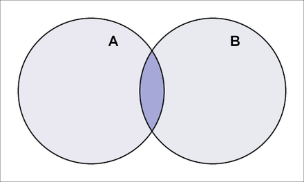

До сих пор мы научились создавать несколько таблиц и настраивать связи друг с другом, но предположим, что теперь у нас есть требование к отчету, который должен отображать все заказы и сведения о пользователях, у которых есть заказ. Что мы делаем?
Ключевое слово JOIN в SQL отвечает за такого рода работу, объединяя разные таблицы вместе. Итак, давайте начнем учиться пользоваться этим инструментом!
При использовании JOIN первое, что нам знакомо, — это LEFT JOIN, который можно представить как обработку таблицы в левой части оператора как основной таблицы, а другой таблицы — как присоединенной таблицы. При использовании синтаксиса, связанного с JOIN, отображаются все столбцы из обеих таблиц. Однако если какая-либо конкретная запись основной таблицы не включает записи прикрепленной таблицы, значения столбцов в прикрепленной таблице будут установлены в NULL.
Эту идею будет легче понять на примере. Предположим, у нас есть две таблицы:
orders
| id | user_id | note |
| 1 | 1 | some information |
| 2 | 2 | some information |
| 3 | 2 | no comments |
| 4 | NULL | weird |
users
| id | name | age |
| 1 | John | 40 |
| 2 | May | 30 |
| 3 | Tim | 25 |
Предположим, мы хотим использовать users в качестве основной таблицы и объединять orders в качестве прикрепленной таблицы. Тогда мы можем сказать, что пользователи оставили заказы на объединение, и написать следующий запрос:
Здесь мы можем сосредоточиться на строке LEFT JOIN и разделить ее на 2 части:
1. LEFT JOIN: в приведенном
выше случае основная таблица — это users. Далее следует таблица, используемая в качестве
прикрепленной таблицы, то есть orders.
2. ON: это ключевое слово позволяет SQL узнать, как соединить две
таблицы. Итак, вы можете заметить, что мы установили столбец id users, который
будет связан со
столбцом user_id orders. Это наиболее важный способ применения отношений,
поскольку мы узнали об отношениях
в предыдущей главе.
Результат:
| id | name | age | id | user_id | note |
| 1 | John | 40 | 1 | 1 | some information |
| 2 | May | 30 | 2 | 2 | some comments |
| 2 | May | 30 | 3 | 2 | no comments |
| 3 | Tim | 25 | NULL | NULL | NULL |
Мы видим, что, поскольку users являются основной таблицей, даже если существует запись пользователя без соответствующих данных о заказе, запись все равно будет получена. Но столбцы orders в этой записи будут содержать значение NULL. Например, здесь в таблице orders нет записей, у которых user_id равен 3, поэтому для Тима (чей id равен 3) заполняем оставшиеся столбцы NULL.
Поскольку существует LEFT JOIN, должно быть также и RIGHT JOIN, а RIGHT JOIN на самом деле можно рассматривать как противоположное использование LEFT JOIN. Таблица справа становится основной, а таблица слева — присоединенной.
Предположим, что наш оператор SQL выглядит следующим образом:
Результат:
| id | name | age | id | user_id | note |
| 1 | John | 40 | 1 | 1 | some information |
| 2 | May | 30 | 2 | 2 | some information |
| 2 | May | 30 | 3 | 2 | no comments |
| NULL | NULL | NULL | 4 | NULL | weird |
Мы видим, что когда он извлекает все данные orders, части без данных users впереди будут заполнены NULL.
Некоторые из вас, возможно, заметили хитрость:
Если мы поменяем порядок двух таблиц при использовании LEFT JOIN, не будет ли это то же самое, что при использовании RIGHT JOIN?
Это верно! Фактически, приведенный выше оператор RIGHT JOIN эквивалентен:
Единственная разница будет в порядке отображения столбцов. Применяя этот трюк с другими языками программирования, большинство из них могут игнорировать эту разницу и использовать данные, которые мы предоставляем, как обычно!
Хотя мы научились комбинировать данные, вам иногда кажется странным видеть данные со значением NULL? Сейчас мы можем научиться использовать INNER JOIN для извлечения записей, в которых обе таблицы могут быть связаны друг с другом. Это распространенный сценарий фильтрации данных на практике, и его концепция похожа на пересечение.

SQL syntax:
Результат:
| id | name | age | id | user_id | note |
| 1 | John | 40 | 1 | 1 | some information |
| 2 | May | 30 | 2 | 2 | some comments |
| 2 | May | 30 | 3 | 2 | no comments |
Обратите внимание, что в приведенном выше примере обе таблицы имеют столбец id. Предположим, мы хотим отображать только id таблицы order. Что нам делать? Можем ли мы записать его напрямую как SELECT id?
В этом случае вы не сможете напрямую написать имя столбца. Когда мы выбираем столбец и присутствует повторяющееся имя столбца, мы должны указать, какой столбец нам нужен, включив имя таблицы. Однако столбцы с непересекающимися именами можно записывать напрямую. Вот пример:
Результат:
| order_id | name |
| 1 | John |
| 2 | May |
| 3 | May |
Примечание. За исключением MySQL, большинство программных систем баз данных обычно поддерживают FULL OUTER JOIN. Для получения более подробной информации обратитесь к Oracle — FULL OUTER JOIN.